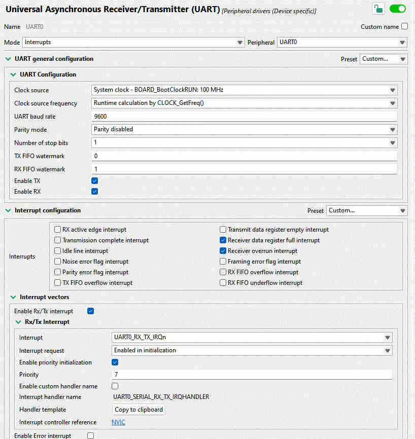
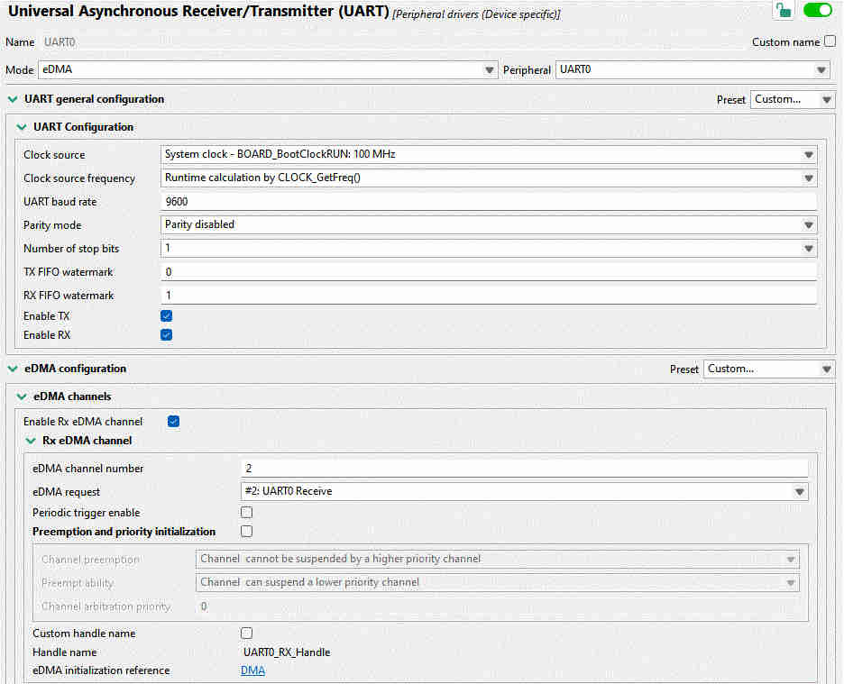

The SDK[1] drivers provided by NXP for use on the Kinetis K64 platform are extensive, well-tested and ... not perfect. This article shows three bugs found in the ethernet driver. Note that none of this is original content; I merely put it together here for my future reference.
I have only seen this bug happen once in two years and have not found a way to reproduce it at will. So the analysis below may or may not be correct.
The symptom was that the firmware froze upon triggering the assertion in
lwip/port/enet_ethernetif_kinetis.c:
”Buffer returned by
ENET_GetRxFrame()doesn’t match any RX buffer descriptor”
After some Googling I found this forum
thread,
which suggests, in a roundabout way, that there is a missing check in
fsl_enet.c. We have to add following to ENET_GetRxFrame():
if (curBuffDescrip->length == 0U)
{
/* Set LAST bit manually to let following drop error frame
operation drop this abnormal BD.
*/
curBuffDescrip->control |= ENET_BUFFDESCRIPTOR_RX_LAST_MASK;
result = kStatus_ENET_RxFrameError;
break;
}The NXP engineer on the forum explains: “I didn’t use this logic because I never meet this corner case and consider it a redundant operation.” I was curious if this “corner case” every happens, so I added a breakpoint, which got triggered after about two days of constant testing.
ChatGPT seems to think this check is necessary (but then again, I seem to be able to convince it of just about anything I do or do not believe in):
If you omit the check and DMA ever delivers a BD with
length == 0: Your code will think it’s still in the middle of assembling a frame. It will not see theLASTbit yet, so it will happily advance to the next BD. That means the logic walks into an inconsistent state:rxBuffermay point to nothing, yourrxFramebookkeeping goes out of sync, and later you’ll crash on a buffer underrun, invalid pointer, or corrupted frame queue.
It remains to be seen if this check was behind my original crash, and if the body of the if statement is appropriate to handle the condition of unexpected zero-length buffer descriptor.
Credit: User pjanco first reported the error, while AbnerWang posted the solution. [source]
In fsl_enet.c, the function ENET_GetRxFrame() tries to deallocate the
pointer of the receive buffer:
while (index-- != 0U)
{
handle->rxBuffFree(base, &rxFrame->rxBuffArray[index].buffer,
handle->userData, ringId);
}First need to unpack some definitions to understand what the above means.
If we dig into the rxBuffFree() function, we discover it in the file
lwip/port/enet_ethernetif_kinetis.c. The buffer to be deallocated is passed
as a pointer void * buffer, and freed
int idx = ((rx_buffer_t *)buffer) - ethernetif->RxDataBuff;
ethernetif->RxPbufs[idx].buffer_used = false;Next, what are rxFrame and rxBuffArray? The first one is of type
enet_rx_frame_struct_t, which is defined in fsl_enet.h:
typedef struct _enet_rx_frame_struct
{
enet_buffer_struct_t *rxBuffArray;
...
} enet_rx_frame_struct_t;This allows us to see what is the type of rxBuffArray:
typedef struct _enet_buffer_struct
{
void *buffer;
uint16_t length;
} enet_buffer_struct_t;Finally, what is ethernetif->RxDataBuff? We find it declared in
lwip/port/enet_ethernetif_kinetis.c as the static array in the function
ethernetif0_init():
SDK_ALIGN(static rx_buffer_t rxDataBuff_0[ENET_RXBUFF_NUM],
FSL_ENET_BUFF_ALIGNMENT);
ethernetif_0.RxDataBuff = &(rxDataBuff_0[0]);More precisely, RxDataBuff is a pointer to the first element of this array.
This pointer therefore has the type rx_buffer_t*.
That type itself is declared at the top of the same file as an aligned
version of a uint8_t buffer:
typedef uint8_t rx_buffer_t[SDK_SIZEALIGN(ENET_RXBUFF_SIZE,
FSL_ENET_BUFF_ALIGNMENT)];Now we can take a step back and think whether the idx calculation would be
best done with the buffer itself, or a pointer to it. The calculation subtracts
the following:
rxFrame->rxBuffArray[index].buffer, of type void*, is a pointer to the
memory location that stores the ethernet frame.
ethernetif->RxDataBuff, of type rx_buffer_t*
The corrected code should pass the buffer pointer stored in .buffer, not the
address of the .buffer field (omit the &):
handle->rxBuffFree(base, rxFrame->rxBuffArray[index].buffer,
handle->userData, ringId);Credit: This bug was found by KC on 7/31/2024.
Another bug in ethernetif0_init() in enet_ethernetif_kinetis.c: the ethernet
buffer descriptor structs are declared static:
AT_NONCACHEABLE_SECTION_ALIGN(
static enet_rx_bd_struct_t rxBuffDescrip_0[ENET_RXBD_NUM],
FSL_ENET_BUFF_ALIGNMENT);
AT_NONCACHEABLE_SECTION_ALIGN(
static enet_tx_bd_struct_t txBuffDescrip_0[ENET_TXBD_NUM],
FSL_ENET_BUFF_ALIGNMENT);The assumption is that since they are declared static, the descriptors will be
zero-initialized at system startup. However, the macro
AT_NONCACHEABLE_SECTION_ALIGN potentially places these descriptor in a special
section that can bypass the zero-initialization, depending on the startup code
and linker script.
In that case, we need to manually zero out these buffers. I put the following at
the top of ethernetif_enet_init() in enet_ethernetif_kinetis.c:
// Buffer descriptors must be initialized to zero
memset(ðernetif->RxBuffDescrip[0], 0x00, ENET_RXBD_NUM*sizeof(ethernetif->RxBuffDescrip[0]));
memset(ðernetif->TxBuffDescrip[0], 0x00, ENET_TXBD_NUM*sizeof(ethernetif->TxBuffDescrip[0]));Credit: This bug was also found by KC.

This is Part 2 in the series: Linux on STM32MP135. See other articles.
In the previous article, we built a Linux kernel and manually copied it to an SD card. This works for a first test, but quickly becomes annoying. Here, we show how to use the STM32CubeProg to flash the SD card without removing it from the evaluation board.
Note: You may find the extensive explanations in the Bootlin article about flashing a similar chip helpful.
Finish the build process as per the previous
article, so as to have at least the
following files under buildroot/output/images/:
tf-a-stm32mp135f-dk.stm32
fip.bin
u-boot-nodtb.bin
sdcard.img
Go to the ST website to download the STM32CubeProg. This unfortunately requires a registration and sign-up.
Get the Linux version, unpack in a new directory, and run the installer (just follow its verbose prompts):
$ cd cubeprog
$ unzip ../stm32cubeprg-lin-v2-20-0.zip
$ ./SetupSTM32CubeProgrammer-2.20.0.linuxNow plug in all three USB cables for the board. Set the DIP boot switches for serial boot (press in all the upper parts of the white rocker switches). Press the black reset button. If everything worked, you should be able to see the board under your USB devices:
jk@Lutien:/var/www/articles$ lsusb
...
Bus 001 Device 114: ID 0483:3753 STMicroelectronics STLINK-V3
Bus 001 Device 012: ID 0483:df11 STMicroelectronics STM Device in DFU Mode
...The STLINK-V3 is what you can use to monitor the flashing progress via UART.
Simply open a serial monitor:
sudo picocom -b 115200 /dev/ttyACM0Run the STM32CubeProg from the location that you installed it in to check that it is able to detect the board:
$ sudo ~/cube/bin/STM32_Programmer_CLI -l usb
-------------------------------------------------------------------
STM32CubeProgrammer v2.20.0
-------------------------------------------------------------------
===== DFU Interface =====
Total number of available STM32 device in DFU mode: 1
Device Index : USB1
USB Bus Number : 001
USB Address Number : 002
Product ID : USB download gadget@Device ID /0x501, @Revision ID /0x1003, @Name /STM32MP135F Rev.Y,
Serial number : 002800423232511538303631
Firmware version : 0x0110
Device ID : 0x0501If that worked, it’s time to prepare the images for flashing. Go to
buildroot/output/images and create a file flash.tsv with the following
contents:
#Opt Id Name Type IP Offset Binary
- 0x01 fsbl1-boot Binary none 0x0 tf-a-stm32mp135f-dk.stm32
- 0x03 fip_boot Binary none 0x0 fip.bin
- 0x03 ssbl-boot Binary none 0x0 u-boot-nodtb.bin
P 0x10 sdcard RawImage mmc0 0x0 sdcard.imgFinally, run the flashing command itself:
sudo ~/cube/bin/STM32_Programmer_CLI -c port=usb1 -w flash.tsvThe STM32CubeProg will go through the sequence of files you wrote into
flash.tsv. First, the Arm Trusted Firmware (TF-A) gets written to the
memory and executed. It then does some secure magic behind the scenes and
accepts the next payload via the DFU protocol, the U-Boot. At last, U-Boot
itself is executed and it in turn accepts the last payload: the SD card
itself. Which was, after all, the only thing you wanted to transfer anyway
...
The tutorial above again presents the simplest method I have found so far, with a minimum of steps and prerequisites, to flash the SD card of the eval board without taking the card in and out. What’s the issue?
The STM32CubeProg comes in a 291M zip file, which gets installed as a 1.5G program. We use it to copy a disk image to the SD card. See the problem yet? Or let’s consider the on-board procedure: TF-A (4,212 files and 506,952 lines of code according to cloc) is used to run U-Boot (21,632 files and 3,419,116 lines of code), just so that a semi-standard USB DFU protocol can expose the SD card to write the image.
But why??? ChatGPT explains:
U-Boot became the standard since vendors upstreamed support there, and it offers cross-platform flashing via DFU/fastboot for factories and Windows users who can’t
ddraw disks. It also doubles as the hook for A/B updates, rollback, and secure boot. In practice, this forces developers into a complex boot stack, even though most boards could just boot Linux directly from SD/eMMC and use a tiny DFU mass-storage tool for recovery.
A more likely explanation is that the boot process has acquired an unnecessary reputation for being difficult, so that few want to mess with it. If there is a working solution, it will get incorporated into the software stack, no matter how baroque. The warning has been around for a long time:
Big building-blocks [...] can lead to more compact code and shorter development time. [...] Less clear, however, is how to assess the loss of control and insight when the pile of system-supplied code gets so big that one no longer knows what’s going on underneath.
[... As] libraries, interfaces, and tools become more complicated, they become less understood and less controllable. When everything works, rich programming environments can be very productive, but when they fail, there is little recourse.[1]
All these tool are intended to make our work easier, but as they are piled on
without any reasonable limit, the resulting mess is ironically far more
complicated than the problem they are solving. If the task at hand is to flash
an SD card image, why doesn’t the firmware expose the medium as a USB mass
storage device, so that standard tools like dd could be used to work with it?
The cynical answer suggests itself ... They didn’t know better.
Those who do not understand Unix are condemned to reinvent it, poorly.[2]
Surely it cannot be too difficult to write a simple “bare-metal” program, which we could load to the board using the simple and well-documented UART protocol implemented in the ROM of the STM32MP1. The program would be very small and quick to load. The program would expose the available media as mass storage devices, and that’s it.
But ... You may object, we need U-Boot anyways, otherwise how are we to load Linux? As we will explain in a future article, that is not so. U-Boot is entirely unnecessary for a large class of embedded Unix applications.
Unix was built on a handful of ideas that turned out to be both powerful and practical. The following discussion blends established Unix facts with interpretive commentary; it does not claim to describe any single historical Unix precisely.
The shell runs commands as programs. There’s no special class of built-ins; if you want a new command, you write a program. By default, programs read from standard input and write to standard output, unless redirected.
Most commands are small filters for text streams. They do one job, and they work together naturally. Connecting them with pipes lets you build bigger tools out of simpler ones.
Everything is a file: user data, programs, directories, and even devices. Directories form a tree; each entry points to an inode, which knows where the data blocks live. Devices show up as files too.
This means that I/O and storage use the same calls: open, close, read, write. That’s the interface for everything. Executables and data files are stored in the same way, reinforcing the idea that a single abstraction suffices.
The kernel is deliberately small. It multiplexes I/O and leaves the rest to user programs. Even init, the first process, is just a program: it opens terminals, prints the login message, and starts shells in a loop.
Processes come from the fork/exec pair. One process copies itself, then overlays the copy with another program. The idea is simple, and it works.
System calls are invoked by a trap instruction, wrapped in library functions so programs don’t depend directly on kernel details. Programs stay independent, and the operating system can change underneath.
Unix was small enough that one person could understand the whole thing. That made it easier to modify, port, and teach. The manuals were short, consistent, and focused on usage, not internals. A second volume provided tutorials and background for those who wanted more.
The guiding principle was: be general, but not too general; portable, but not too portable. If you try to solve every problem in advance, you get bloat. By keeping it modest, Unix was more useful—and paradoxically more general and portable—than larger systems.
Some parts were machine-specific, usually device drivers or bits of assembly. But not many. Most code was reusable, and the exceptions were small. An array of function pointers mapped device numbers to driver routines; that was about as complex as it got. For example, a character device[1] driver needs to expose the following functions:
extern struct cdevsw
{
int (*d_open)();
int (*d_close)();
int (*d_read)();
int (*d_write)();
int (*d_ioctl)();
int (*d_stop)();
struct tty *d_ttys;
} cdevsw[];The 80/20 rule applied everywhere: make most of the system simple and portable, accept a little complexity when it really pays off. Code was meant to be 80% reusable, not 100%, which avoided the kind of rigidity seen in later systems.
Unix came with all its own sources and tools. It was self-hosting, and people could read, study, and change the code. The system included what you needed, and nothing more. No useless programs, no dead code, and very little irrelevant platform-specific clutter.
The philosophy was to write programs you would actually use, not ones meant to satisfy a standard or some hypothetical future need.
The enduring lesson of Unix is that simplicity beats complexity. Interfaces were orthogonal, text was the universal medium, and programs were small and self-contained. Each one did one thing, and did it well.
That philosophy proved more important than any single feature. It made Unix portable, teachable, and durable. It showed that you don’t need a committee or a grand design to build something powerful. You need clarity, restraint, and the discipline to write only what you need.
Unix also suggests how to go further. Small, portable, self-contained programs can approach the kind of stability that TeX achieved—systems so refined that they don’t need to change.
Portability itself can be modular. The Wollongong group[2] showed this by first porting Unix piece by piece to an Interdata 7/32, running it alongside the host system, and then replacing the host functions with assembly routines. That approach points toward kernels that are more modular, where pieces like fork and exec could be reused without bringing along a whole scheduler.
Device drivers can also be simplified. One idea is to treat them as user processes whose IDs match their device numbers. They would implement the usual open, read, and write interfaces, but otherwise behave like ordinary programs: start and stop freely, hold their own memory, receive signals. The kernel would not “manage” them, yet the familiar Unix file interface would still apply.
The same lesson holds today. Artificial intelligence can sometimes repair or adapt programs automatically, but only if the systems are small and self-contained. Large, tangled software offers no foothold. Unix worked because it avoided dead code, avoided over-abstraction, and made each interface simple enough to understand and replace.
Finally, Unix showed that the way forward can’t be too innovative. If “the way” is too radical, no one will follow it.[3] The genius of Unix was that it was just radical enough.
/usr/sys/h/conf.h. ↩
This is Part 1 in the series: Linux on STM32MP135. See other articles.
Wouldn’t it be great to have a single board computer that runs just Linux? That is, no external libraries, tools, driver modules—just the kernel binary, and whichever programs you choose to run under it. After all, Linux is just a C program, so how hard can it be to compile and run it? Read on to get started exploring the wild world of embedded Linux.
In this tutorial, we show how to get a basic “minimal” Linux installed on the STM32MP135 evaluation board with a minimum of steps or obscure scripts. For detailed explanations, refer to the excellent writeup from Bootlin.
Get a copy of Buildroot:
$ git clone https://gitlab.com/buildroot.org/buildroot.git
$ cd buildrootAs of this writing, the latest commit in this repository is
$ git rev-parse HEAD
bbb0164de08f761a3399c961700db44befff5c70Find the default configuration appropriate for this board:
$ make list-defconfigs | grep stm32mp135This shows that stm32mp135f_dk_defconfig is available. Install it by calling
make on it:
$ make stm32mp135f_dk_defconfigLet’s enable the USB mode for Arm Trusted Firmware (TF-A) so that we will be able to use USB flashing in the future. Open
$ make menuconfigNavigate under Bootloaders ---> ARM Trusted Firmware (ATF) and add the
following at the end of the “Additional ATF build variables” string:
STM32MP_USB_PROGRAMMER=1Then select “OK”, and “Esc” your way out of the menuconfig. Make sure to say “Yes” when asked whether to save the new configuration.
Run the build, and collect logs into a file:
$ time make >log.txt 2>&1On my dual-core i5-7300U laptop, this took about an hour and a half.
Watch the build from another terminal:
$ tail -f log.txtCopy the generated image to an SD card (assumed to be at /dev/sdb):
$ sudo dd if=output/images/sdcard.img of=dev/sdb bs=1MTime to run it on the evaluation board! Set it up as follows:
Insert the SD card into the slot
Connect the USB-C port to the right of the screen (CN12, labelled PWR_IN)
to a powered USB hub
Connect the Micro USB (CN10, left of the screen) to a desktop computer,
which will enumerate as a serial port (/dev/ttyACM0 on my computer).
Open a serial console (115200 baud, no parity) to listen

Set the DIP switches to boot from the SD card as shown in the image below. In
this orientation, press in on the upper side of the rockers of BOOT0 and
BOOT2, and on the lower side for BOOT1.

Press the black reset button and if everything went right, you should see the kernel boot messages displayed on the serial monitor, until the login prompt gets displayed. Done!
Welcome to Buildroot
buildroot login: root
# uname -a
Linux buildroot 6.12.22 #1 SMP PREEMPT Wed Sep 3 20:23:46 PDT 2025 armv7l GNU/LinuxThis is, to my knowledge, the fastest way to get started with embedded Linux on
“real” hardware in terms of number of steps. However, it does not result in the
most minimal distribution. Besides the Linux kernel, the default configuration
pulls in a number of large programs, such as U-Boot, ATF, OP-TEE, and more.
(Examine buildroot/dl) after building to see all the stuff that got downloaded
in the build process.)
For someone used to bare-metal embedded work, the size and complexity of this auxiliary software is utterly baffling. A bootloader with more lines of code than my whole project? Several different compilers and interpreters (C, Rust, Perl, Python) needed for a “Hello, world!?”
In my mind I hold an ideal of the “pure” essence of Unix: there is one kernel,
which at the end of its boot process invokes one user-space program (init),
which then does anything it wants to. I believe in the simplicity of the Linux
boot process, as outlined by Russell King in the 2002 masterpiece, ”Booting ARM
Linux”:
Initialize RAM and copy the kernel into it
Initialise one serial port
Load the device tree blob (DTB) into RAM, and place its address in r2
Pass control to Linux and watch it boot like magic!
It is time we regain the pristine uncomplicated state that used to exist before everything became bundled and containerized and wrapped inside countless layers of abstraction that are supposed to make things simpler, but in the end serve only to confuse everyone.
In the next articles, we will take this “primordial mess” and cut it down to size. Stay tuned!
Working on a FreeRTOS-based project running on the NXP Kinetis K64, I wanted to read data from several UART interfaces. The default “easy” method using interrupts is easy to set up via the NXP MCUXpresso Config Tools; the problem is that the UART peripheral only has a few bytes of built-in buffer. If the data is arriving at the interfaces faster than the firmware can read it, the tiny buffer immediately overflows and part of the data is lost.
This is obviously a task for Direct Memory Access (DMA): let the data arrive into a much larger buffer, from where the software can take characters at its leisure. In this article, we will briefly contrast three ways of receiving data from UART: interrupt-based, simple DMA, and DMA with a circular buffer (aka ring buffer).
The “point-and-click” method works out of the box with the Config tools. Leave things at their default values, or change whatever is necessary. In my setup, I had the values shown in the image below.

Even the interrupt handler is provided by the tool. Click on “Copy to clipboard”, and adapt as necessary. All that is needed is to read the status flags and read a byte of data, and push it to a FreeRTOS queue that we set up previously:
void UART0_SERIAL_RX_TX_IRQHANDLER(void)
{
uint32_t intStatus = UART_GetStatusFlags(UART0);
if ((kUART_RxDataRegFullFlag | kUART_RxOverrunFlag) & intStatus) {
const uint8_t data = UART_ReadByte(UART0);
xQueueSendToBackFromISR(rx_queue, &data, NULL);
}
}This seems like it couldn’t be simpler, and it just should work. Indeed, for baud rates at or below about 9600, it does work almost reliably. And yet sometimes, for no good reason, a byte gets dropped. Is that possible?
Let’s see. At 115,200 baud, we get a character every 8.7 μs. It’s entirely possible that some other interrupt or critical section takes priority over this one for much longer than that, especially looking at some of the rather long Ethernet ISRs supplied with the NXP SDK. If we have less than 10 microseconds to process a character before it goes away, we’ll probably miss many of them! Onwards to DMA.
With direct memory access, the UART peripheral should be able to place the bytes directly in a software buffer, without having to go through an RTOS queue. Besides being much faster, we can also make the queue almost arbitrarily large, ensuring that we’ll be able to get to the data eventually and process it.
Thanks to the Config Tools, setting this up is again very straightforward. Just enable some checkboxes and set up DMA channels, as I did in the image below.

This time, we do not have a handy “Click to get code” button. Instead, ChatGPT or Gemini or Claude are happy to write something that nearly works. In a dedicated FreeRTOS task, let’s poll for characters as they arrive into the buffer:
for (;;) {
uint32_t bytesWritten;
if (UART_TransferGetReceiveCountEDMA(UART0_PERIPHERAL,
&UART0_UART_eDMA_Handle,
&bytesWritten) != kStatus_Success) {
vTaskDelay(pdMS_TO_TICKS(1));
continue;
}
while (readIndex != (bytesWritten % DMA_BUF_SIZE)) {
char c = uartRxBuf[readIndex];
readIndex = (readIndex + 1) % DMA_BUF_SIZE;
// now do what you want with the received character
}
vTaskDelay(1);
}Note the vTaskDelay(1) calls which ensure that this task does not starve
lower-priority tasks of processor time.
In the above, the chatbot made use of the function
UART_TransferGetReceiveCountEDMA() from the NXP SDK and implemented the ring
buffer wraparound with some modulo operation that’s probably about correct. But
what happens when the buffer gets filled up? In that case, an interrupt triggers
the DMA callback, which simply restarts the DMA to receive data back into the
beginning of the buffer:
static void uart0_callback(UART_Type *base, uart_edma_handle_t *handle,
status_t status, void *userData)
{
uart_transfer_t rxXfer = {
.data = uartRxBuf,
.dataSize = DMA_BUF_SIZE
};
UART_ReceiveEDMA(UART0_PERIPHERAL, handle, &rxXfer);
}This works great, but has an unfortunate limitation. When the buffer is at the end of its capacity, characters must arrive slowly enough so we have time to re-start the DMA. In other words, we have not solved anything! Data will occasionally get lost when the callback is executing.
Naturally, the DMA should be writing continuously without us having to restart it. Much back and forth with AI achieved nothing. The version of the NXP SDK that I’m using, while full of intricate code covering what appears to be almost every possible use case, somehow does not cover the most elementary DMA operation: continuous data reception.
This brings us to the final section: how to make the ring buffer work without
stopping? By my count, the SDK takes 4517 lines of C to implement the
“simplified” DMA configuration code, and yet there’s no easy
UART_MakeMeARingBuffer(). There are 80 pages in the K64 Sub-Family Reference
Manual about the DMA, and 85 about UART, with lots of tables of registers, flow
charts, diagrams. Enough to leave one entirely mystified.
The key revelation here is that the DMA peripheral is not nearly as complicated as NXP would have us believe. As it turns out, there are only a couple fields one has to fill out in the “transfer control descriptor” (TCD): source and address of the data, the size of each logical word (for UART: one byte), how many bytes to write altogether, and what to do after writing them.
To integrate it with the code generated by the Config Tools above, we need the handles to the UART and eDMA controls, and a buffer to place the data in:
UART_Type *uart = UART0_PERIPHERAL;
edma_handle_t *dma = &UART1_RX_Handle;
#define BUF_SIZE 256
static uint8_t buf[BUF_SIZE];Next, we define the source (UART buffer) and destination for the data:
edma_tcd_t *tcd = (edma_tcd_t *)&dma->base->TCD[dma->channel];
tcd->SADDR = UART_GetDataRegisterAddress(uart);
tcd->DADDR = (uint32_t)buf;Fill in the source and destination offset, number of bytes to transfer at once (just one byte), and number of bytes to transfer in a so-called “major loop” (equal to the size of the ring buffer):
tcd->SOFF = 0;
tcd->DOFF = 1;
tcd->NBYTES = 1;
tcd->ATTR = DMA_ATTR_SSIZE(kEDMA_TransferSize1Bytes) | DMA_ATTR_DSIZE(kEDMA_TransferSize1Bytes);
tcd->CITER = BUF_SIZE;
tcd->BITER = BUF_SIZE;
tcd->DLAST_SGA = -BUF_SIZE;Note the DLAST_SGA field: it causes the write address to be rewound back to
the start of the data buffer upon completing the major loop. This is really all
that’s needed to create a true circular ring buffer that runs without stopping.
Finally, to make it run, we need to enable the DMA service request from both the eDMA and UART sides:
dma->base->SERQ = DMA_SERQ_SERQ(dma->channel);
uart->C5 |= (uint8_t)UART_C5_RDMAS_MASK;
uart->C2 |= (uint8_t)UART_C2_RIE_MASK;Beware: If making use of any NXP-provided functions, know that several of them
implicitly set the DREQ bit (“Disable Request”) which will stop DMA once a
single major loop is complete. As the Reference Manual puts it,
DREQ(Disable Request) If this flag is set, the eDMA hardware automatically clears the correspondingERQbit when the current major iteration count reaches zero.
Once the DMA is happily streaming UART bytes into the buffer, we would like to
get it out. The simplest way to do so would be a character at a time,
getc-style.
Step One: consult the DMA registers about the current iteration inside a major loop:
uint32_t ch = dma->channel;
const uint16_t biter = dma->base->TCD[ch].BITER_ELINKNO;
const uint16_t citer = dma->base->TCD[ch].CITER_ELINKNO;Step Two: compute the number of bytes available in the buffer.
size_t write_index = (biter - citer) % UART_DMA_BUF_SIZE;
int avail = 0;
if (write_index >= *head) {
avail = write_index - *head;
} else {
avail = (UART_DMA_BUF_SIZE - *head) + write_index;
}Step Three: If any bytes are available for readout, let’s read it out (into
the variable c), then advance the queue pointer:
if (avail) {
uint8_t c = buf[*head];
*head = (*head + 1) % UART_DMA_BUF_SIZE;
}That’s it!
My intention with this writeup was to show that DMA configuration on the Kinetis K64 is very simple once one learns to let go of the tools that are supposed to make it easier: the NXP SDK, the Config Tools GUI, the Reference Manual. 17 lines of code is all it takes to configure a UART ring buffer with DMA!
Direct manipulation of system registers may appear confusing. After all, where is one supposed to learn which are all the registers that must be set? The SDK is often the only entry point, but it’s discouraging: confusing, over-engineered, and ironically missing the simplest features.
It’s an amusing experience to take the “official” code examples and manually inline all the functions, unfolding the complex call chain into hundreds of lines of code. Once all the unnecessary conditional compilation and inapplicable conditions are removed, you can often be left with just a handful of lines of simple code which, with the help of the reference manual, is pretty readable. Certainly more than the mostly undocumented, partially implemented SDK morass of functions, drivers, modules, what have you!